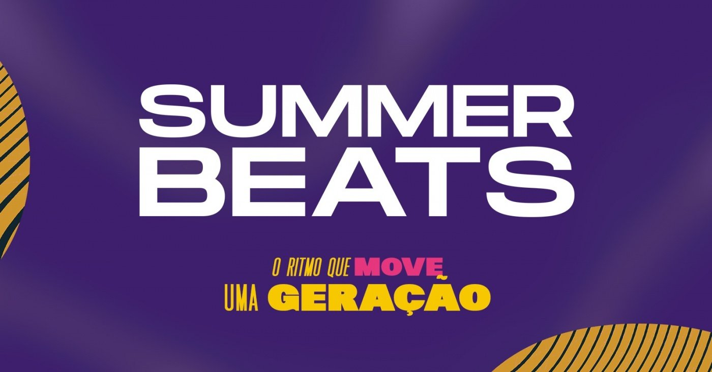
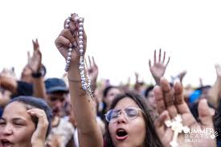
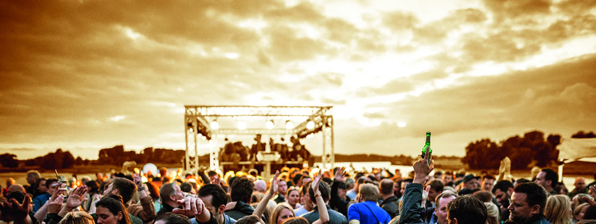

Summer Beats Festival
Música, Fé e Juventude em Sintonia
Galeria de Momentos
Identidade Visual do Evento

Juventude, energia e espiritualidade.
Momento de Louvor

Jovens reunidos em um intenso momento de louvor e celebração da fé.
Encerramento com Oração

Momento especial de oração coletiva marcando o encerramento do evento.